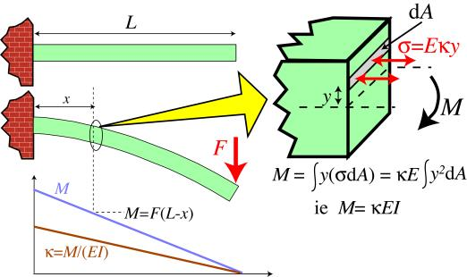
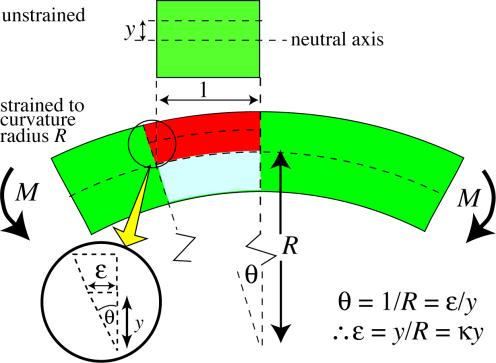
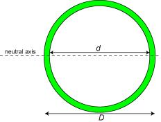
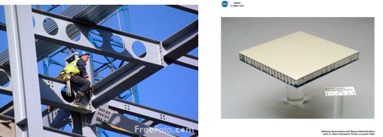
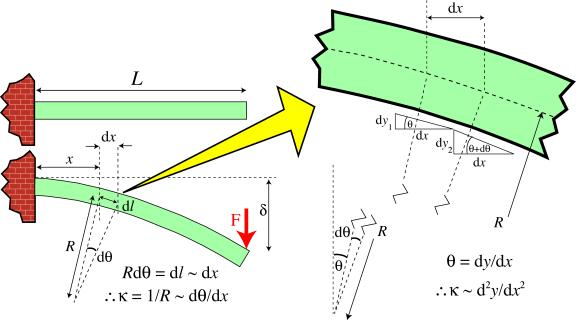
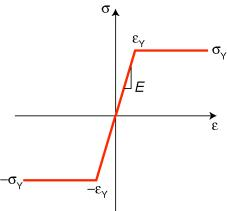
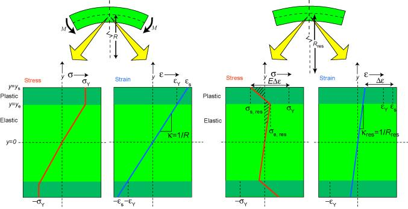
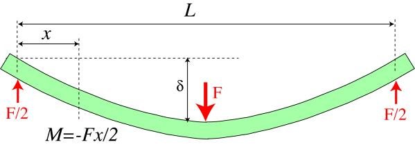
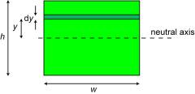
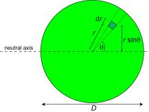

The original, as published: DoITPoMS, University of Cambridge, Bending and Torsion of Beams. CC BY-NC-SA 4.0, https://creativecommons.org/licenses/by-nc-sa/4.0/. Imported as published, from https://www.doitpoms.ac.uk/tlplib/beam_bending/ https://www.doitpoms.ac.uk/tlplib/beam_bending/
Beam stiffness is an important concept for many types of structure, particularly those with slender shapes. Inadequate beam stiffness can lead to large deflections, and may also cause high localised stresses and a danger of failure in that region. In addition to bending moments, such structures may be subjected to twisting, or torsional moments (torques). In fact, virtually all structures, including buildings and many natural structures (trees, bones etc) are commonly subjected to significant applied moments. It is important to recognise the roles of structural shape, applied loads and material properties when predicting the resultant moments, deflections and stress distributions. The aim of this TLP is to provide the necessary information to allow such bending and torsional moments, deflections (both elastic and elastoplastic) and stress distributions to be predicted and understood.
Bending moments are produced by transverse loads applied to beams. The simplest case is the cantilever beam , widely encountered in balconies, aircraft wings, diving boards etc. The bending moment acting on a section of the beam, due to an applied transverse force, is given by the product of the applied force and its distance from that section. It thus has units of N m. It is balanced by the internal moment arising from the stresses generated. This is given by a summation of all of the internal moments acting on individual elements within the section. These are given by the force acting on the element (stress times area of element) multiplied by its distance from the neutral axis, y .

Balancing the external and internal moments during the bending of a cantilever beam
Therefore, the bending moment, M , in a loaded beam can be written in the form
\[M = \int {y(\sigma dA)} \]
The concept of the curvature of a beam, κ, is central to the understanding of beam bending. The figure below, which refers now to a solid beam, rather than the hollow pole shown in the previous section, shows that the axial strain, ε, is given by the ratio y / R . Equivalently, 1/R (the "curvature", κ ) is equal to the through-thickness gradient of axial strain. It follows that the axial stress at a distance y from the Neutral axis of the beam is given by
σ = E κ y

Relation between the radius of curvature, R, beam curvature, κ , and the strains within a beam subjected to a bending moment.
The bending moment can thus be expressed as
\[M = \int {y(E\kappa ydA)} = \kappa E\int {{y^2}} dA\]
This can be presented more compactly by defining I (the second moment of area, or "moment of inertia") as
\[I = \int\limits_0^{{y_{\max }}} {} {y^2}{\rm{d}}A\]
The units of I are m 4 . The value of I is dependent solely on the beam sectional shape. Click here to see how I is calculated for two simple shapes.
The moment can now be written as
M = κ E I
These equations allow the curvature distribution along the length of a beam (ie its shape), and the stress distribution within it, to be calculated for any given set of applied forces. The following simulation implements these equations for a user-controlled beam shape and set of forces. The 3-point bending and 4-point bending loading configurations in this simulation are SYMMETRICAL, with the upward forces, denoted by arrows, outside of the downward force(s), denoted by hooks

A fruitful approach to designing beams which are both light and stiff is to make them hollow. Calculation of the second moment of area for hollow beams is very straightforward, since it is obtained by simply subtracting the I of the missing section from that of the overall section. For example, that for a cylindrical tube is given by
\[I = {I_{{\rm{complete\;setion}}}} - {I_{{\rm{missing\;setion}}}} = \frac{{\pi {D^4}}}{{64}} - \frac{{\pi {d^4}}}{{64}}\]
The product EI is termed the "beam stiffness", or sometimes the "flexural rigidity". It is often given the symbol Σ. It is a measure of how strongly the beam resists deflection under bending moments. It is analogous to the Young's modulus in uniaxial loading (with the curvature being analogous to the uniaxial strain and the bending moment being analogous to the uniaxial stress). For a given material, the beam stiffness is maximised by maximising the value of I . This is done by using sectional shapes for which most of the sectional area is remote from the neutral axis.
For example, a beam of square cross-section is stiffer than a circular beam with the same area, since a circle has a larger proportion of the section near the neutral axis. A hollow square section is even stiffer. Taking this rationale still further leads to I-section beams and sandwich panels.

I-beams are commonly used in construction of buildings. Sandwich panels are also in extensive use, for example in surf-boards, aircraft, skis etc
As illustrated in the diagram below, the beam curvature, κ, is approximately equal to the second derivative (curvature) of the neutral axis line (dotted line in diagram)
\[\kappa = \frac{{{d^2}y}}{{d{x^2}}}\]

The approximation involved in equating beam curvature to the curvature of the neutral axis of a beam.
It follows that
\[M = \kappa EI = EI\frac{{{{\rm{d }}^2}y}}{{{\rm{d }}{x^2}}}\]
Since the moment at the section concerned can also be written, for a cantilever beam, as M = F (L - x)
it follows that
\[EI\frac{{{{\rm{d }}^2}y}}{{{\rm{d }}{x^2}}} = F\left( {L - x} \right)\]
This second order differential equation can be integrated (twice), with appropriate boundary conditions, to find the deflection of the beam at different points along its length. For a cantilever beam, this operation is shown below.
\[\begin{array}{l} EI\frac{{{\rm{d }}y}}{{{\rm{d }}x}} = FLx - \frac{{F{x^2}}}{2} + {C_1}\\ {\rm{at }}\;x = 0, \frac{{{\rm{d }}y}}{{{\rm{d }}x}} = 0, {\rm{thus\; }}{C_1} = 0 \end{array}\]
\[\begin{array}{l} EIy = \frac{{FL{x^2}}}{2} - \frac{{F{x^3}}}{6} + {C_2}\\ {\rm{at }}\;x = 0, y = 0, {\rm{thus\; }}{C_2} = 0 \end{array}\]
which can be rearranged to give
\[y = \frac{{F{x^2}}}{{6EI}}(3L - x)\]
For example, at the loaded end ( x = L ), this gives
\[\delta = \frac{{F{L^3}}}{{3EI}}\]
The corresponding operation for symmetrical 3-point bending can be seen by clicking here .
If the stresses within a beam exceed the elastic limit, then plastic deformation will occur. This can dramatically change the behaviour. Consider a material exhibiting elastic - perfectly plastic behaviour (ie no work-hardening), as shown below.

Stress-strain curve for an elastic-perfectly plastic material.
Stress and strain distributions before and after applying the moment are shown below. In the outer regions of the beam, the stress will be capped at σY, although the strain will continue to increase linearly with distance from the neutral axis, as in the elastic case. The curvature (strain gradient), κ, induced by a given moment, M, will now be greater, since this increase will be required in order to bring the internal moment back up to the level of the applied moment - i.e. bending will increase.

Distributions of stress and strain within a beam before and after application of a moment sufficiently large to cause plastic deformation
A further difference is observed on removal of the applied moment, since the beam will now retain a residual curvature, κres , as a result of the plastic deformation. This is due to the presence of residual stresses . The residual curvature can be calculated, using the fact that the beam is subject to no applied force. It follows that the residual stress distribution must satisfy a force balance , so that
\[\int\limits_{y = 0}^{{y_{\rm{s}}}} {\sigma \left( y \right)} \;{\rm{d}}y = 0\]
which is equivalent to the shaded areas in the diagram being equal. Since the change in stress (at any value of y ) on removing the applied moment is given by the change in strain at that depth times the modulus (eg = E Δε at y = ys - see diagram), these equations allow the residual stress distribution to be established. The following expressions can be obtained ( click here ) for the thickness of the elastic core, the residual curvature, the surface residual stress and the residual stress at the limit of the elastic core.
\[{y_{\rm{e}}} = \frac{{{\sigma _{\rm{Y}}}}}{{E\kappa }}\]
\[{\kappa _{{\rm{res}}}} = \kappa {\left( {1 - \frac{{{y_{\rm{e}}}}}{{{y_{\rm{s}}}}}} \right)^2}\]
\[{\sigma _{{\rm{s, res}}}} = {\sigma _{\rm{Y}}} - E\;{y_{\rm{s}}}\left( {\kappa - {\kappa _{{\rm{res}}}}} \right)\]
\[{\sigma _{{\rm{e, res}}}} = {\sigma _{\rm{Y}}} - E\;{y_{\rm{e}}}\left( {\kappa - {\kappa _{{\rm{res}}}}} \right)\]
Of course, the picture may in practice be complicated by work hardening, more complex sectional geometries, non-prismatic beams etc, but the same principles still apply. Incidentally, it may be noted that, in addition to the force balance, the residual stress distribution in an unloaded beam must also satisfy a moment balance , so that
\[\int\limits_{y = 0}^{{y_{\rm{s}}}} {\sigma \left( y \right)} \;y\;{\rm{d}}y = 0\]
However, the symmetry of the tensile and compressive sides of the beam ensures that this condition is satisfied, so it is not involved in the solution procedure in this case. In other cases, however, in which the neutral axis is not a plane of symmetry, this condition may also need to be invoked in order to find the solution.
The plastic deformation behaviour of a prismatic beam, with a symmetrical, rectangular section, made of a metal exhibiting no work hardening, can be explored using the plastic version of the beam bending simulation presented in an earlier section.
You should now understand the basic principals of bending and torsion. You should be able to predict how a beam will respond elastically to a bending moment, from a knowledge of the Young's modulus, E , and the sectional geometry of the beam (from which the second moment of area, I , is derived). You should understand the relationship between the (local) bending moment, M , the beam stiffness (flexural rigidity), EI , and the resultant (local) curvature, κ.
The concept of torsion has been introduced, with the analogue of the bending moment being a torque, T , and the analogue of the curvature being the rate of twist of the beam, θ / L . The elastic constant controlling the behaviour is the shear modulus, G , and the sectional geometry analogue of the second moment of area, I , is the polar second moment of area, IP.
You should also have an appreciation of the nature of the stress distribution within an elastically deformed beam and you should understand that, for a metallic beam, it's possible that these stresses could exceed the yield stress, σY , so that plastic deformation could take place. In this case, there is a change in the relationship between the applied moment and the resultant curvature (so that a given increase in moment gives a larger increase in curvature). Furthermore, on removing the applied moment, the beam retains a residual curvature. Analogous phenomena can occur during torsion. These effects can be quantitiatively predicted.
Some implications of these analyses for the design of components and structures subject to bending moments and torques have been briefly outlined.

Symmetrical 3-point bend loading
The bending moment is given by
\[M = \frac{{ - Fx}}{2}\]
It follows that
\[EI\frac{{{{\rm{d}}^2}y}}{{{\rm{d}}{x^2}}} = \frac{{ - Fx}}{2}\]
and the integration procedures lead to
\[\begin{array}{l} EI\frac{{{\rm{d}}y}}{{{\rm{d}}x}} = - \frac{{F{x^2}}}{4} + {C_1}\\ {\rm{at}}\;x = \frac{L}{2},\;\;\frac{{{\rm{d}}y}}{{{\rm{d}}x}} = 0\quad {\rm{thus}}\;{C_1} = \frac{{F{L^2}}}{{16}} \end{array}\]
\[\begin{array}{l} EIy = \frac{{ - F{x^3}}}{{12}} - \frac{{F{L^2}x}}{{16}} + {C_2}\\ {\rm{at}}\;x = 0,\;y = 0\quad {\rm{thus}}\;{C_2} = 0 \end{array}\]
so the equation for the deflection is
\[y = \frac{{Fx}}{{48EI}}(3{L^2} - 4{x^2})\]
and deflection of the centre of the beam is given by
\[\delta = \frac{{F{L^3}}}{{48EI}}\]

The second moment of area for a rectangular section beam of width w and thickness h is given by
\[I = \int\limits_0^{h/2} {{y^2}dA} = 2\int\limits_0^{h/2} {{y^2}w {\rm{d}}y} = 2w\left[ {\frac{{{y^3}}}{3}} \right]_0^{h/2} = \frac{{w{h^3}}}{{12}}\]

The corresponding operation for a circular cross-section of diameter D gives
\[\begin{array}{l} I = \int\limits_A^{} {{y^2}{\rm{d}}A} = \int\limits_{\theta = 0}^{2\pi } {\int\limits_{r = 0}^{D/2} {{{\left( {r\sin \theta } \right)}^2}} } \;\left[ {\left( {r{\rm{d}}\theta } \right){\rm{d}}r} \right] = \int\limits_{\theta = 0}^{2\pi } {\left\{ {\int\limits_{r = 0}^{D/2} {{r^3}{\rm{d}}r} } \right\}} {\sin ^2}\theta {\rm{d}}\theta \\ = \frac{{{D^4}}}{{64}}\int\limits_{\theta = 0}^{2\pi } {{{\sin }^2}\theta {\rm{d}}\theta } = \frac{{{D^4}}}{{64}}\int\limits_{\theta = 0}^{2\pi } {\left( {\frac{{1 - \cos 2\theta }}{2}} \right){\rm{d}}\theta } = \frac{{{D^4}}}{{64}}\left[ {\frac{\theta }{2} - \frac{{\sin 2\theta }}{4}} \right]_0^{2\pi } = \frac{{\pi {D^4}}}{{64}} \end{array}\]
Academic consultant: Bill Clyne (University of Cambridge)
Content development: Sonya Pemberton
Photography and video: Brian Barber and Carol Best
Web development: David Brook
This DoITPoMS TLP was funded by the UK Centre for Materials Education and the Department of Materials Science and Metallurgy, University of Cambridge.
Additional support for the development of this TLP came from the Worshipful Company of Armourers and Brasiers'